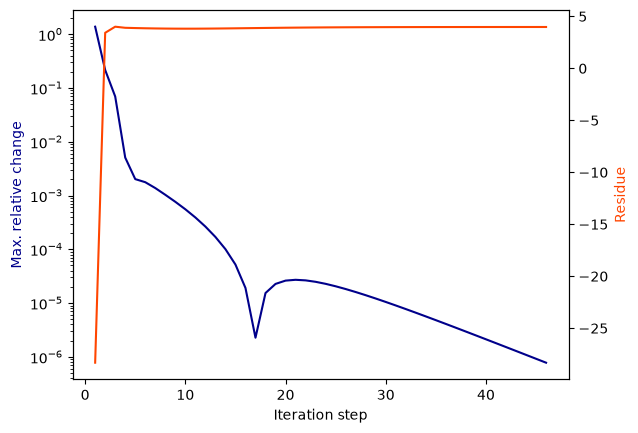
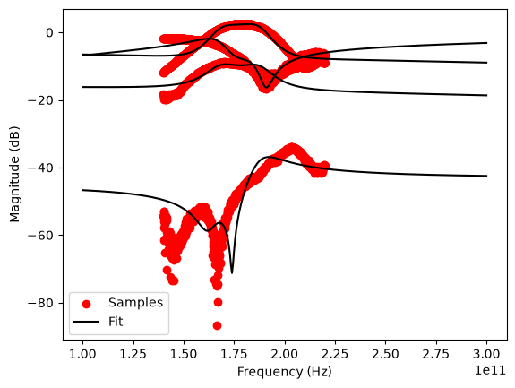
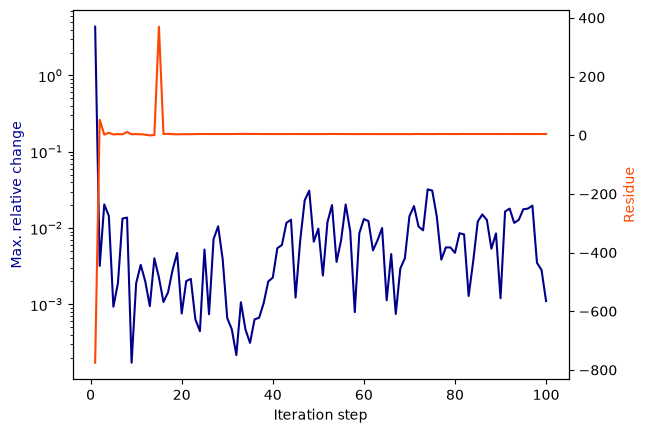
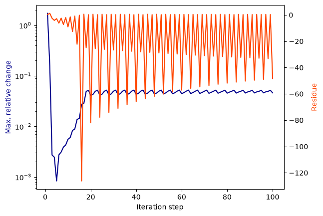

Common problems and pitfalls#
Regular Vector Fitting is susceptible to some general problems and to specific user errors. This section is intended to collect and address common issues and to help mitigating them. Additional explanations and background information can be found in the Vector Fitting tutorial.
Sources of problems#
The following things can cause significant problems in the vector fitting process and may result in poor convergence and/or large errors of the fit:
not enough poles
too many poles
strong noise in the data
From points 1) and 2) it is obvious that the number of poles has to be chosen carefully, which often requires several attempts to get right. But even with the right number of poles, the fit quality and the required number of iterations can be disappointing in case of strong noise in the data, usually from measurements. In such cases, successful vector fits might still be achieved with auto_fit(), an improved and automated version of the vector fitting algorithm utilizing iterative pole
adding and skimming.
The 2-port measurement from example 2 is a tricky network to fit properly. It will serve as an example of the different issues. Also see Ex2: Measured 190 GHz Active 2-Port for a demonstration of auto_fit() on this network.
[1]:
import matplotlib.pyplot as mplt
import numpy as np
import skrf
from skrf.vectorFitting import VectorFitting
nw = skrf.network.Network('./190ghz_tx_measured.S2P')
vf = VectorFitting(nw)
freqs = np.linspace(100e9, 300e9, 401)
Example of noisy data with not enough poles#
Three real poles and one complex conjugate pair is not enough for an acurrate fit of this network. It takes surprisingly many iterations and the resulting model error is still fairly large:
[2]:
vf.vector_fit(n_poles_real=3, n_poles_cmplx=1)
[3]:
print(f'RMS error = {vf.get_rms_error()}')
RMS error = 0.2270113774306557
[4]:

[5]:
vf.plot_s_db(freqs=freqs)

Example of noisy data with too many poles#
Ten real poles and ten complex conjugate pairs are too much for this simple network. The unused poles get shifted toward higher frequencies outside the measured band and still spook around during the relocation process. Due to these spurious pole, the relocation process cannot converge properly and gets stopped after reaching the maximum number of iterations (default is 100). Interstingly, the residue settles rather quickly within the first 20 iterations, as shown in the convergence plot. Still, the fitting result within the measured frequency band is very good, but the spurious out-of-band poles are clearly visible.
[6]:
vf.vector_fit(n_poles_real=10, n_poles_cmplx=10)
/tmp/ipykernel_775864/2893947848.py:1: RuntimeWarning: Vector Fitting: The pole relocation process stopped after reaching the maximum number of iterations (N_max = 100). The results did not converge properly.
Hint: the linear system was ill-conditioned (max. condition number was 2.162120111322858e+16).
vf.vector_fit(n_poles_real=10, n_poles_cmplx=10)
[7]:

[8]:
print(f'RMS error = {vf.get_rms_error()}')
RMS error = 0.013108519677541508
[9]:
vf.plot_s_db(freqs=freqs)
Comment on starting poles#
During the pole relocation process (first step in the fitting process), the starting poles are successively moved to frequencies where they can best match all target responses. Additionally, the type of poles can change from real to complex-conjugate: two real poles can become one complex-conjugate pole (and vice versa). As a result, there are multiple combinations of starting poles which can produce the same final set of poles. However, certain setups will converge faster than others, which also depends on the initial pole spacing. In extreme cases, the algorithm can even be “undecided” if two real poles behave exactly like one complex-conjugate pole and it gets “stuck” jumping back and forth without converging to a final solution.
Equivalent setups for a fitting attempt with n_poles_real=3, n_poles_cmplx=4 (i.e. 3+4):
1+5
3+4
5+3
7+2
9+1
11+0
Equivalent setups for another fitting attempt with n_poles_real=4, n_poles_cmplx=4 (i.e. 4+4):
0+6
2+5
4+4
6+3
8+2
10+1
12+0
Examples for problematic setups that do not converge properly due to an oscillation between two (equally good) solutions:
0+5 <–> 2+4 <–> …
0+7 <–> 2+5 <–> …
[10]:
vf.vector_fit(n_poles_real=0, n_poles_cmplx=5)
vf.plot_convergence()
/tmp/ipykernel_775864/2802061987.py:1: RuntimeWarning: Vector Fitting: The pole relocation process stopped after reaching the maximum number of iterations (N_max = 100). The results did not converge properly.
vf.vector_fit(n_poles_real=0, n_poles_cmplx=5)

Even though the pole relocation process oscillated between two (or more?) solutions and did not converge, the fit was still successful, because the solutions themselves did converge:
[11]:
[11]:
np.float64(0.027879745406736444)
[12]:
fig, ax = mplt.subplots(2, 2)
fig.set_size_inches(12, 8)
vf.plot_s_mag(0, 0, freqs=freqs, ax=ax[0][0]) # s11
vf.plot_s_mag(0, 1, freqs=freqs, ax=ax[0][1]) # s12
vf.plot_s_mag(1, 0, freqs=freqs, ax=ax[1][0]) # s21
vf.plot_s_mag(1, 1, freqs=freqs, ax=ax[1][1]) # s22
fig.tight_layout()
mplt.show()